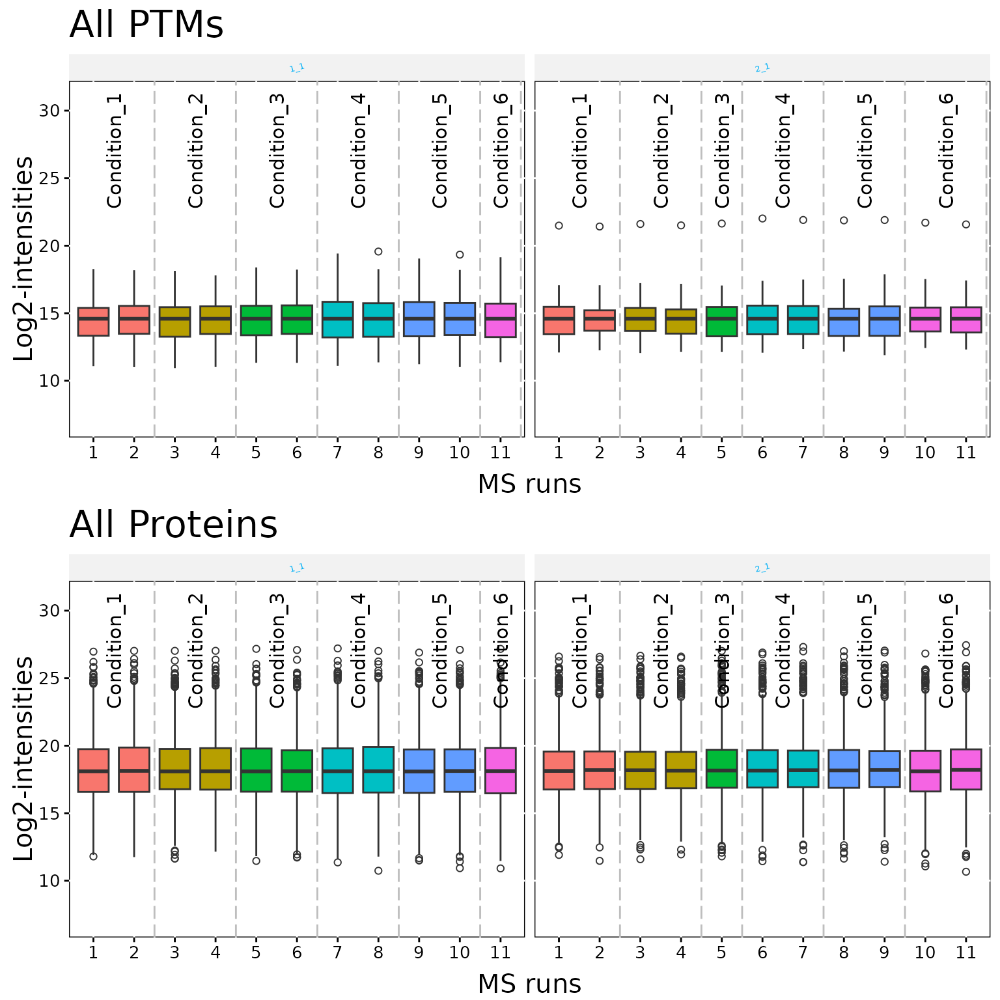
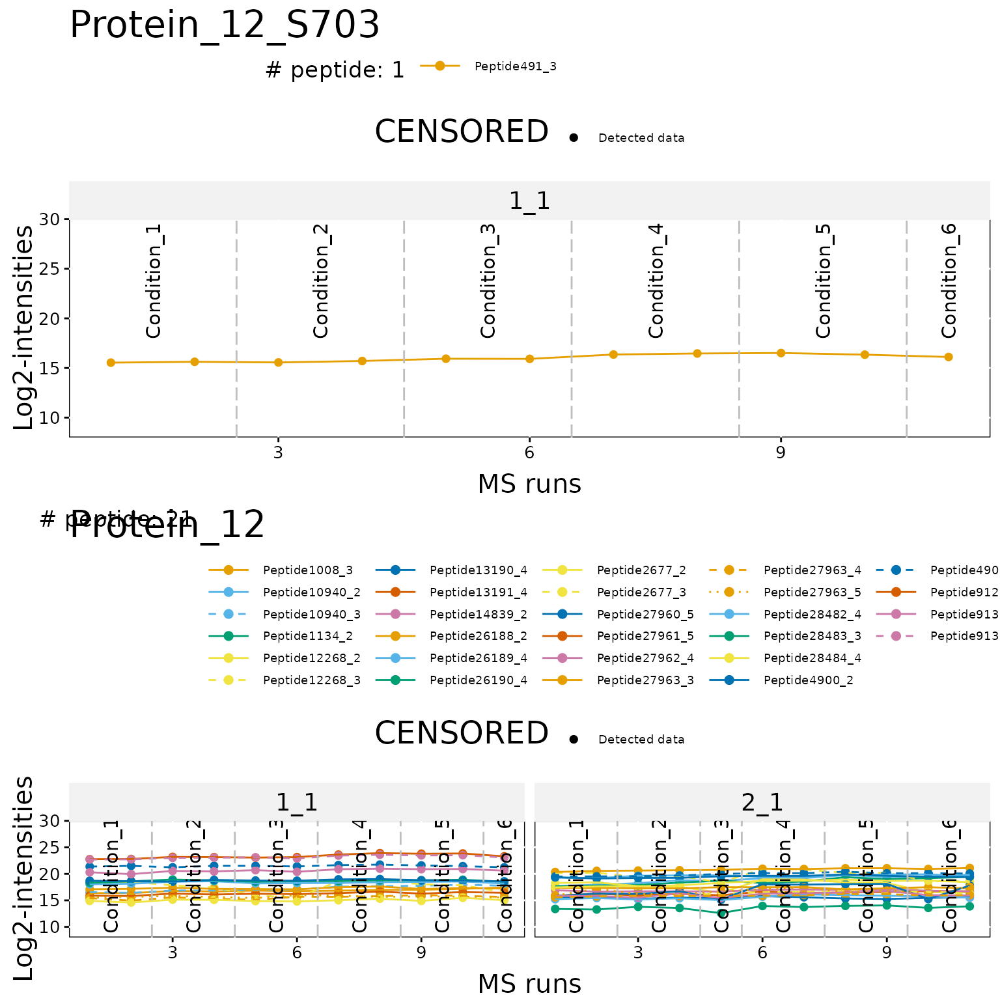
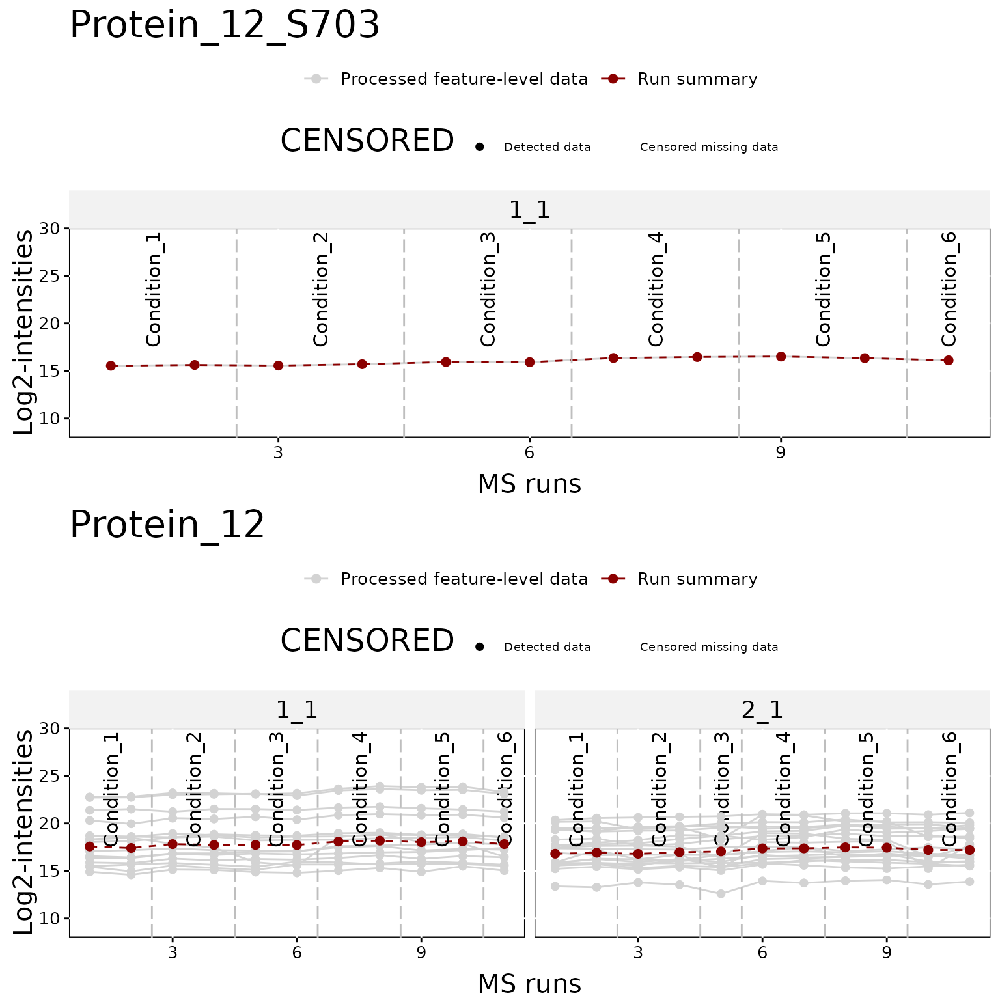
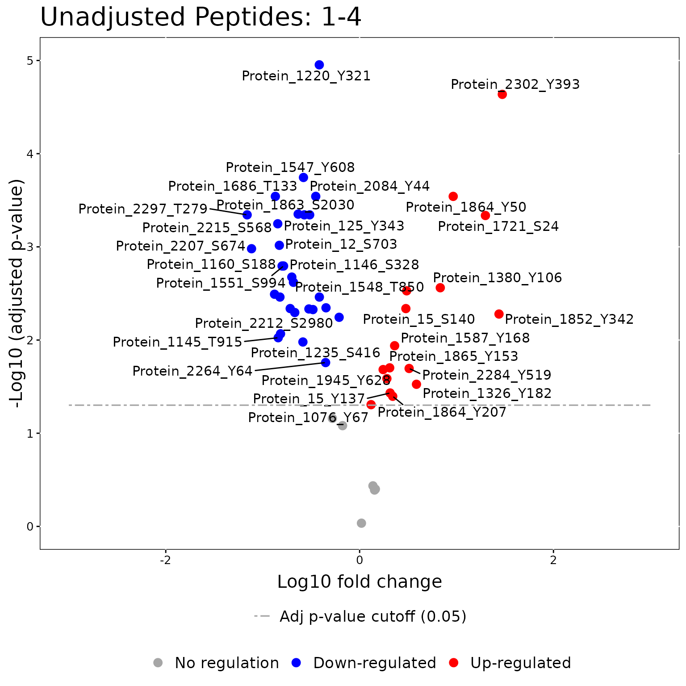
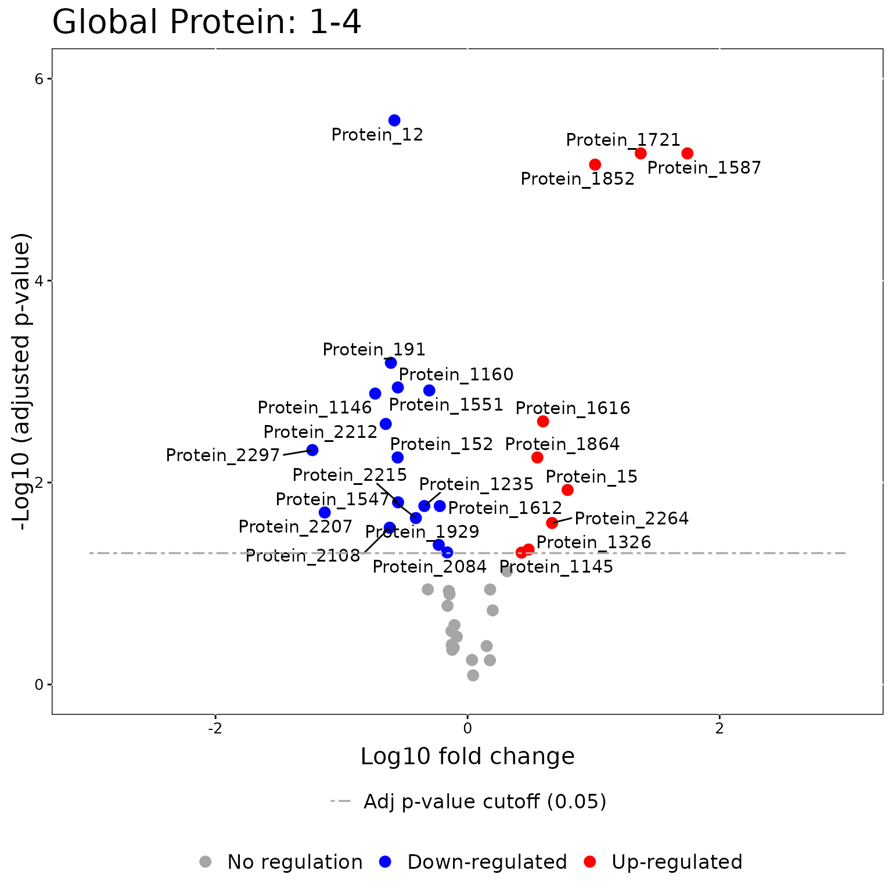
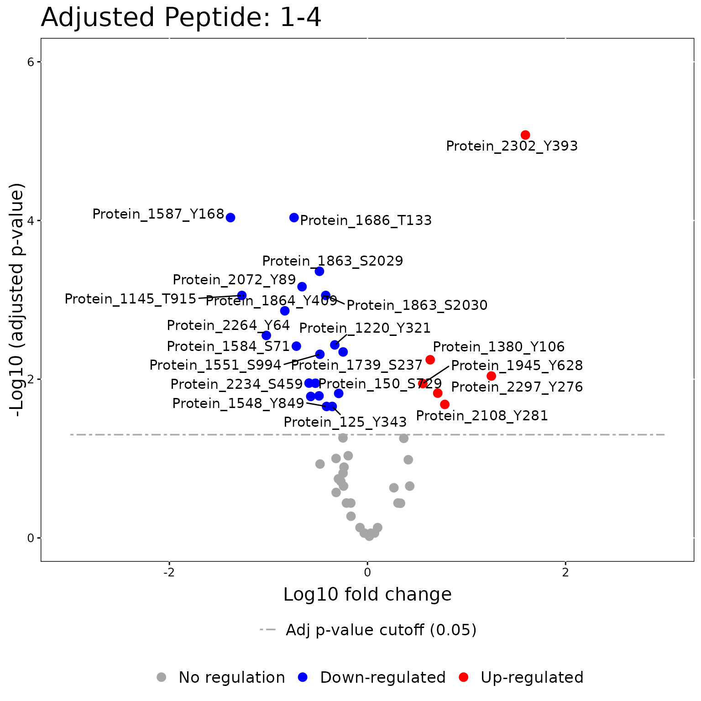
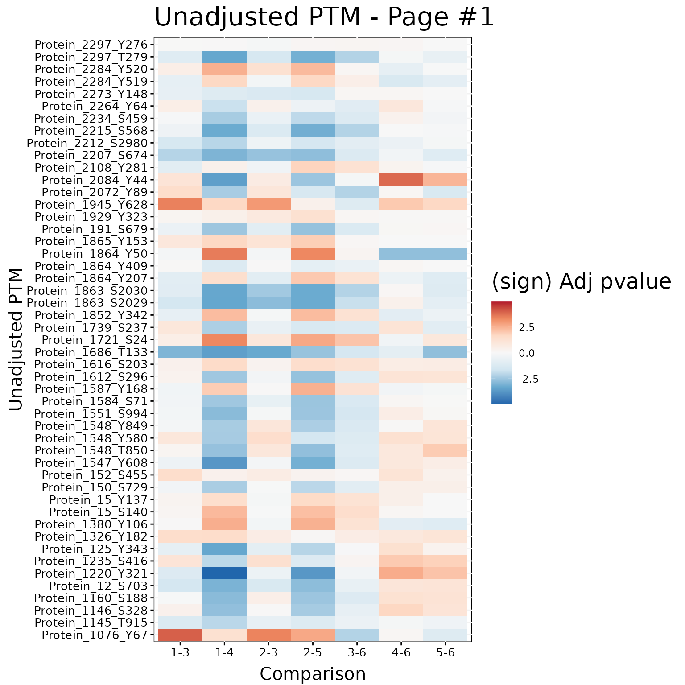
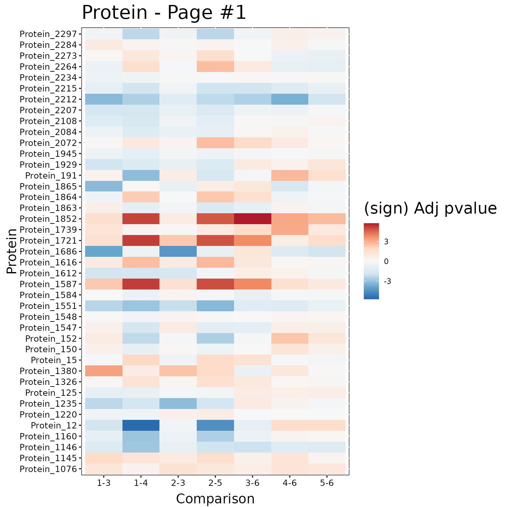
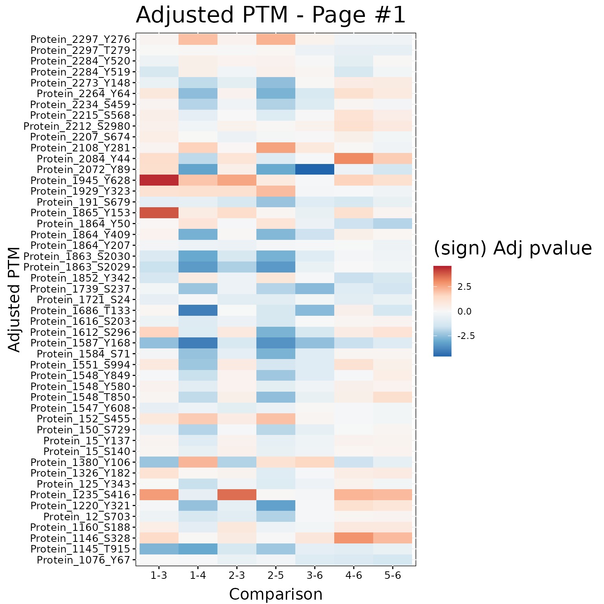

MSstatsPTM TMT Workflow
Devon Kohler (kohler.d@northeastern.edu)
2026-04-25
Source:vignettes/MSstatsPTM_TMT_Workflow.Rmd
MSstatsPTM_TMT_Workflow.RmdThis Vignette provides an example workflow for how to use the package MSstatsPTM for a TMT dataset.
Installation
To install this package, start R (version “4.0”) and enter:
if (!requireNamespace("BiocManager", quietly = TRUE))
install.packages("BiocManager")
BiocManager::install("MSstatsPTM")1. Workflow
1.1 Raw Data Format
Note: We are actively developing dedicated converters for
MSstatsPTM. If you have data from a processing tool that does not have a
dedicated converter in MSstatsPTM please add a github issue
https://github.com/Vitek-Lab/MSstatsPTM/issues and we will
add the converter.
We go in depth on all converters included in this package in the
MSstatsPTM_LabelFree_Workflow. For more information about
data conversion please review the relevant sections there.
1.2 Summarization - dataSummarizationPTM_TMT
After loading in the input data, the next step is to use the dataSummarizationPTM_TMT function This provides the summarized dataset needed to model the protein/PTM abundance. The function will summarize the Protein dataset up to the protein level and will summarize the PTM dataset up to the peptide level. There are multiple options for normalization and missing value imputation. These options should be reviewed in the package documentation.
#> | | | 0% | |= | 1% | |== | 2% | |== | 3% | |=== | 5% | |==== | 6% | |===== | 7% | |====== | 8% | |======= | 9% | |======= | 10% | |======== | 12% | |========= | 13% | |========== | 14% | |=========== | 15% | |=========== | 16% | |============ | 17% | |============= | 19% | |============== | 20% | |=============== | 21% | |=============== | 22% | |================ | 23% | |================= | 24% | |================== | 26% | |=================== | 27% | |==================== | 28% | |==================== | 29% | |===================== | 30% | |====================== | 31% | |======================= | 33% | |======================== | 34% | |======================== | 35% | |========================= | 36% | |========================== | 37% | |=========================== | 38% | |============================ | 40% | |============================ | 41% | |============================= | 42% | |============================== | 43% | |=============================== | 44% | |================================ | 45% | |================================= | 47% | |================================= | 48% | |================================== | 49% | |=================================== | 50% | |==================================== | 51% | |===================================== | 52% | |===================================== | 53% | |====================================== | 55% | |======================================= | 56% | |======================================== | 57% | |========================================= | 58% | |========================================== | 59% | |========================================== | 60% | |=========================================== | 62% | |============================================ | 63% | |============================================= | 64% | |============================================== | 65% | |============================================== | 66% | |=============================================== | 67% | |================================================ | 69% | |================================================= | 70% | |================================================== | 71% | |================================================== | 72% | |=================================================== | 73% | |==================================================== | 74% | |===================================================== | 76% | |====================================================== | 77% | |======================================================= | 78% | |======================================================= | 79% | |======================================================== | 80% | |========================================================= | 81% | |========================================================== | 83% | |=========================================================== | 84% | |=========================================================== | 85% | |============================================================ | 86% | |============================================================= | 87% | |============================================================== | 88% | |=============================================================== | 90% | |=============================================================== | 91% | |================================================================ | 92% | |================================================================= | 93% | |================================================================== | 94% | |=================================================================== | 95% | |==================================================================== | 97% | |==================================================================== | 98% | |===================================================================== | 99% | |======================================================================| 100%
#> | | | 0% | |=== | 4% | |===== | 7% | |======== | 11% | |========== | 15% | |============= | 19% | |================ | 22% | |================== | 26% | |===================== | 30% | |======================= | 33% | |========================== | 37% | |============================= | 41% | |=============================== | 44% | |================================== | 48% | |==================================== | 52% | |======================================= | 56% | |========================================= | 59% | |============================================ | 63% | |=============================================== | 67% | |================================================= | 70% | |==================================================== | 74% | |====================================================== | 78% | |========================================================= | 81% | |============================================================ | 85% | |============================================================== | 89% | |================================================================= | 93% | |=================================================================== | 96% | |======================================================================| 100%
#> | | | 0% | |= | 1% | |== | 2% | |== | 4% | |=== | 5% | |==== | 6% | |===== | 7% | |====== | 8% | |======= | 9% | |======= | 11% | |======== | 12% | |========= | 13% | |========== | 14% | |=========== | 15% | |============ | 16% | |============ | 18% | |============= | 19% | |============== | 20% | |=============== | 21% | |================ | 22% | |================ | 24% | |================= | 25% | |================== | 26% | |=================== | 27% | |==================== | 28% | |===================== | 29% | |===================== | 31% | |====================== | 32% | |======================= | 33% | |======================== | 34% | |========================= | 35% | |========================== | 36% | |========================== | 38% | |=========================== | 39% | |============================ | 40% | |============================= | 41% | |============================== | 42% | |============================== | 44% | |=============================== | 45% | |================================ | 46% | |================================= | 47% | |================================== | 48% | |=================================== | 49% | |=================================== | 51% | |==================================== | 52% | |===================================== | 53% | |====================================== | 54% | |======================================= | 55% | |======================================== | 56% | |======================================== | 58% | |========================================= | 59% | |========================================== | 60% | |=========================================== | 61% | |============================================ | 62% | |============================================ | 64% | |============================================= | 65% | |============================================== | 66% | |=============================================== | 67% | |================================================ | 68% | |================================================= | 69% | |================================================= | 71% | |================================================== | 72% | |=================================================== | 73% | |==================================================== | 74% | |===================================================== | 75% | |====================================================== | 76% | |====================================================== | 78% | |======================================================= | 79% | |======================================================== | 80% | |========================================================= | 81% | |========================================================== | 82% | |========================================================== | 84% | |=========================================================== | 85% | |============================================================ | 86% | |============================================================= | 87% | |============================================================== | 88% | |=============================================================== | 89% | |=============================================================== | 91% | |================================================================ | 92% | |================================================================= | 93% | |================================================================== | 94% | |=================================================================== | 95% | |==================================================================== | 96% | |==================================================================== | 98% | |===================================================================== | 99% | |======================================================================| 100%
#> | | | 0% | |= | 1% | |== | 2% | |=== | 4% | |=== | 5% | |==== | 6% | |===== | 7% | |====== | 8% | |======= | 10% | |======== | 11% | |======== | 12% | |========= | 13% | |========== | 14% | |=========== | 16% | |============ | 17% | |============= | 18% | |============= | 19% | |============== | 20% | |=============== | 22% | |================ | 23% | |================= | 24% | |================== | 25% | |=================== | 27% | |=================== | 28% | |==================== | 29% | |===================== | 30% | |====================== | 31% | |======================= | 33% | |======================== | 34% | |======================== | 35% | |========================= | 36% | |========================== | 37% | |=========================== | 39% | |============================ | 40% | |============================= | 41% | |============================== | 42% | |============================== | 43% | |=============================== | 45% | |================================ | 46% | |================================= | 47% | |================================== | 48% | |=================================== | 49% | |=================================== | 51% | |==================================== | 52% | |===================================== | 53% | |====================================== | 54% | |======================================= | 55% | |======================================== | 57% | |======================================== | 58% | |========================================= | 59% | |========================================== | 60% | |=========================================== | 61% | |============================================ | 63% | |============================================= | 64% | |============================================== | 65% | |============================================== | 66% | |=============================================== | 67% | |================================================ | 69% | |================================================= | 70% | |================================================== | 71% | |=================================================== | 72% | |=================================================== | 73% | |==================================================== | 75% | |===================================================== | 76% | |====================================================== | 77% | |======================================================= | 78% | |======================================================== | 80% | |========================================================= | 81% | |========================================================= | 82% | |========================================================== | 83% | |=========================================================== | 84% | |============================================================ | 86% | |============================================================= | 87% | |============================================================== | 88% | |============================================================== | 89% | |=============================================================== | 90% | |================================================================ | 92% | |================================================================= | 93% | |================================================================== | 94% | |=================================================================== | 95% | |=================================================================== | 96% | |==================================================================== | 98% | |===================================================================== | 99% | |======================================================================| 100%
head(MSstatsPTM.summary$PTM$ProteinLevelData)
#> Mixture TechRepMixture Run Channel Protein Abundance BioReplicate
#> 1 1 1 1_1 126C Protein_1076_Y67 13.53222 Condition_4_1
#> 2 1 1 1_1 126C Protein_1145_T915 12.05299 Condition_4_1
#> 3 1 1 1_1 126C Protein_1146_S328 14.43190 Condition_4_1
#> 4 1 1 1_1 126C Protein_1160_S188 16.17976 Condition_4_1
#> 5 1 1 1_1 126C Protein_12_S703 16.35842 Condition_4_1
#> 6 1 1 1_1 126C Protein_1220_Y321 15.69534 Condition_4_1
#> Condition
#> 1 Condition_4
#> 2 Condition_4
#> 3 Condition_4
#> 4 Condition_4
#> 5 Condition_4
#> 6 Condition_4
head(MSstatsPTM.summary$PROTEIN$ProteinLevelData)
#> Mixture TechRepMixture Run Channel Protein Abundance BioReplicate
#> 1 1 1 1_1 126C Protein_1076 18.59474 Condition_4_1
#> 2 1 1 1_1 126C Protein_1145 14.38146 Condition_4_1
#> 3 1 1 1_1 126C Protein_1146 18.74102 Condition_4_1
#> 4 1 1 1_1 126C Protein_1160 17.92639 Condition_4_1
#> 5 1 1 1_1 126C Protein_12 18.08824 Condition_4_1
#> 6 1 1 1_1 126C Protein_1220 17.51226 Condition_4_1
#> Condition
#> 1 Condition_4
#> 2 Condition_4
#> 3 Condition_4
#> 4 Condition_4
#> 5 Condition_4
#> 6 Condition_4The summarize function returns a list with PTM and Protein summarization information.
1.2.1 QCPlot
Once summarized, MSstatsPTM provides multiple plots to analyze the experiment. Here we show the quality control boxplot. The first plot shows the modified data and the second plot shows the global protein dataset.
dataProcessPlotsPTM(MSstatsPTM.summary,
type = 'QCPLOT',
which.PTM = "allonly",
address = FALSE)
1.2.2 Profile Plot
Here we show a profile plot. Again the top plot shows the modified peptide, and the bottom shows the overall protein.
dataProcessPlotsPTM(MSstatsPTM.summary,
type = 'PROFILEPLOT',
which.Protein = c("Protein_12"),
address = FALSE)

1.3 Modeling - groupComparisonPTM
After summarization, the summarized datasets can be modeled using the
groupComparisonPTM function. This function will model the PTM and
Protein summarized datasets, and then adjust the PTM model for changes
in overall protein abundance. The output of the function is a list
containing these three models named: PTM.Model,
PROTEIN.Model, ADJUSTED.Model.
# Specify contrast matrix
comparison <- matrix(c(1,0,0,-1,0,0,
0,1,0,0,-1,0,
0,0,1,0,0,-1,
1,0,-1,0,0,0,
0,1,-1,0,0,0,
0,0,0,1,0,-1,
0,0,0,0,1,-1),nrow=7, ncol=6, byrow=TRUE)
# Set the names of each row
row.names(comparison)<-c('1-4', '2-5', '3-6', '1-3',
'2-3', '4-6', '5-6')
colnames(comparison) <- c('Condition_1','Condition_2','Condition_3',
'Condition_4','Condition_5','Condition_6')
MSstatsPTM.model <- groupComparisonPTM(MSstatsPTM.summary,
ptm_label_type = "TMT",
protein_label_type = "TMT",
contrast.matrix = comparison,
use_log_file = FALSE, append = FALSE)
#> INFO [2026-04-25 15:37:48] Design: 2 mixtures.
#> INFO [2026-04-25 15:37:48] Design: 1 MS run per mixture.
#> INFO [2026-04-25 15:37:48] Design: group comparison design (Different conditions contains different biological subjects).
#> INFO [2026-04-25 15:37:48] Model fitting for 90 proteins.
#> | | | 0% | |= | 1% | |== | 2% | |== | 3% | |=== | 4% | |==== | 6% | |===== | 7% | |===== | 8% | |====== | 9% | |======= | 10% | |======== | 11% | |========= | 12% | |========= | 13% | |========== | 14% | |=========== | 16% | |============ | 17% | |============ | 18% | |============= | 19% | |============== | 20% | |=============== | 21% | |================ | 22% | |================ | 23% | |================= | 24% | |================== | 26% | |=================== | 27% | |=================== | 28% | |==================== | 29% | |===================== | 30% | |====================== | 31% | |======================= | 32% | |======================= | 33% | |======================== | 34% | |========================= | 36% | |========================== | 37% | |========================== | 38% | |=========================== | 39% | |============================ | 40% | |============================= | 41% | |============================== | 42% | |============================== | 43% | |=============================== | 44% | |================================ | 46% | |================================= | 47% | |================================= | 48% | |================================== | 49% | |=================================== | 50% | |==================================== | 51% | |===================================== | 52% | |===================================== | 53% | |====================================== | 54% | |======================================= | 56% | |======================================== | 57% | |======================================== | 58% | |========================================= | 59% | |========================================== | 60% | |=========================================== | 61% | |============================================ | 62% | |============================================ | 63% | |============================================= | 64% | |============================================== | 66% | |=============================================== | 67% | |=============================================== | 68% | |================================================ | 69% | |================================================= | 70% | |================================================== | 71% | |=================================================== | 72% | |=================================================== | 73% | |==================================================== | 74% | |===================================================== | 76% | |====================================================== | 77% | |====================================================== | 78% | |======================================================= | 79% | |======================================================== | 80% | |========================================================= | 81% | |========================================================== | 82% | |========================================================== | 83% | |=========================================================== | 84% | |============================================================ | 86% | |============================================================= | 87% | |============================================================= | 88% | |============================================================== | 89% | |=============================================================== | 90% | |================================================================ | 91% | |================================================================= | 92% | |================================================================= | 93% | |================================================================== | 94% | |=================================================================== | 96% | |==================================================================== | 97% | |==================================================================== | 98% | |===================================================================== | 99% | |======================================================================| 100%
#> INFO [2026-04-25 15:37:50] Testing for 90 proteins:
#> | | | 0% | |= | 1% | |== | 2% | |== | 3% | |=== | 4% | |==== | 6% | |===== | 7% | |===== | 8% | |====== | 9% | |======= | 10% | |======== | 11% | |========= | 12% | |========= | 13% | |========== | 14% | |=========== | 16% | |============ | 17% | |============ | 18% | |============= | 19% | |============== | 20% | |=============== | 21% | |================ | 22% | |================ | 23% | |================= | 24% | |================== | 26% | |=================== | 27% | |=================== | 28% | |==================== | 29% | |===================== | 30% | |====================== | 31% | |======================= | 32% | |======================= | 33% | |======================== | 34% | |========================= | 36% | |========================== | 37% | |========================== | 38% | |=========================== | 39% | |============================ | 40% | |============================= | 41% | |============================== | 42% | |============================== | 43% | |=============================== | 44% | |================================ | 46% | |================================= | 47% | |================================= | 48% | |================================== | 49% | |=================================== | 50% | |==================================== | 51% | |===================================== | 52% | |===================================== | 53% | |====================================== | 54% | |======================================= | 56% | |======================================== | 57% | |======================================== | 58% | |========================================= | 59% | |========================================== | 60% | |=========================================== | 61% | |============================================ | 62% | |============================================ | 63% | |============================================= | 64% | |============================================== | 66% | |=============================================== | 67% | |=============================================== | 68% | |================================================ | 69% | |================================================= | 70% | |================================================== | 71% | |=================================================== | 72% | |=================================================== | 73% | |==================================================== | 74% | |===================================================== | 76% | |====================================================== | 77% | |====================================================== | 78% | |======================================================= | 79% | |======================================================== | 80% | |========================================================= | 81% | |========================================================== | 82% | |========================================================== | 83% | |=========================================================== | 84% | |============================================================ | 86% | |============================================================= | 87% | |============================================================= | 88% | |============================================================== | 89% | |=============================================================== | 90% | |================================================================ | 91% | |================================================================= | 92% | |================================================================= | 93% | |================================================================== | 94% | |=================================================================== | 96% | |==================================================================== | 97% | |==================================================================== | 98% | |===================================================================== | 99% | |======================================================================| 100%
#> INFO [2026-04-25 15:37:50] Design: 2 mixtures.
#> INFO [2026-04-25 15:37:50] Design: 1 MS run per mixture.
#> INFO [2026-04-25 15:37:50] Design: group comparison design (Different conditions contains different biological subjects).
#> INFO [2026-04-25 15:37:50] Model fitting for 85 proteins.
#> | | | 0% | |= | 1% | |== | 2% | |== | 4% | |=== | 5% | |==== | 6% | |===== | 7% | |====== | 8% | |======= | 9% | |======= | 11% | |======== | 12% | |========= | 13% | |========== | 14% | |=========== | 15% | |============ | 16% | |============ | 18% | |============= | 19% | |============== | 20% | |=============== | 21% | |================ | 22% | |================ | 24% | |================= | 25% | |================== | 26% | |=================== | 27% | |==================== | 28% | |===================== | 29% | |===================== | 31% | |====================== | 32% | |======================= | 33% | |======================== | 34% | |========================= | 35% | |========================== | 36% | |========================== | 38% | |=========================== | 39% | |============================ | 40% | |============================= | 41% | |============================== | 42% | |============================== | 44% | |=============================== | 45% | |================================ | 46% | |================================= | 47% | |================================== | 48% | |=================================== | 49% | |=================================== | 51% | |==================================== | 52% | |===================================== | 53% | |====================================== | 54% | |======================================= | 55% | |======================================== | 56% | |======================================== | 58% | |========================================= | 59% | |========================================== | 60% | |=========================================== | 61% | |============================================ | 62% | |============================================ | 64% | |============================================= | 65% | |============================================== | 66% | |=============================================== | 67% | |================================================ | 68% | |================================================= | 69% | |================================================= | 71% | |================================================== | 72% | |=================================================== | 73% | |==================================================== | 74% | |===================================================== | 75% | |====================================================== | 76% | |====================================================== | 78% | |======================================================= | 79% | |======================================================== | 80% | |========================================================= | 81% | |========================================================== | 82% | |========================================================== | 84% | |=========================================================== | 85% | |============================================================ | 86% | |============================================================= | 87% | |============================================================== | 88% | |=============================================================== | 89% | |=============================================================== | 91% | |================================================================ | 92% | |================================================================= | 93% | |================================================================== | 94% | |=================================================================== | 95% | |==================================================================== | 96% | |==================================================================== | 98% | |===================================================================== | 99% | |======================================================================| 100%
#> INFO [2026-04-25 15:37:53] Testing for 85 proteins:
#> | | | 0% | |= | 1% | |== | 2% | |== | 4% | |=== | 5% | |==== | 6% | |===== | 7% | |====== | 8% | |======= | 9% | |======= | 11% | |======== | 12% | |========= | 13% | |========== | 14% | |=========== | 15% | |============ | 16% | |============ | 18% | |============= | 19% | |============== | 20% | |=============== | 21% | |================ | 22% | |================ | 24% | |================= | 25% | |================== | 26% | |=================== | 27% | |==================== | 28% | |===================== | 29% | |===================== | 31% | |====================== | 32% | |======================= | 33% | |======================== | 34% | |========================= | 35% | |========================== | 36% | |========================== | 38% | |=========================== | 39% | |============================ | 40% | |============================= | 41% | |============================== | 42% | |============================== | 44% | |=============================== | 45% | |================================ | 46% | |================================= | 47% | |================================== | 48% | |=================================== | 49% | |=================================== | 51% | |==================================== | 52% | |===================================== | 53% | |====================================== | 54% | |======================================= | 55% | |======================================== | 56% | |======================================== | 58% | |========================================= | 59% | |========================================== | 60% | |=========================================== | 61% | |============================================ | 62% | |============================================ | 64% | |============================================= | 65% | |============================================== | 66% | |=============================================== | 67% | |================================================ | 68% | |================================================= | 69% | |================================================= | 71% | |================================================== | 72% | |=================================================== | 73% | |==================================================== | 74% | |===================================================== | 75% | |====================================================== | 76% | |====================================================== | 78% | |======================================================= | 79% | |======================================================== | 80% | |========================================================= | 81% | |========================================================== | 82% | |========================================================== | 84% | |=========================================================== | 85% | |============================================================ | 86% | |============================================================= | 87% | |============================================================== | 88% | |=============================================================== | 89% | |=============================================================== | 91% | |================================================================ | 92% | |================================================================= | 93% | |================================================================== | 94% | |=================================================================== | 95% | |==================================================================== | 96% | |==================================================================== | 98% | |===================================================================== | 99% | |======================================================================| 100%
head(MSstatsPTM.model$PTM.Model)
#> Protein Label log2FC SE DF pvalue
#> <fctr> <char> <num> <num> <num> <num>
#> 1: Protein_1076_Y67 1-4 0.11835636 0.05264970 15.00000 4.004178e-02
#> 2: Protein_1076_Y67 2-5 0.24162457 0.05264970 15.00000 3.544345e-04
#> 3: Protein_1076_Y67 3-6 -0.27968805 0.06173696 15.00028 3.984772e-04
#> 4: Protein_1076_Y67 1-3 0.42262536 0.05712141 15.00008 2.223242e-06
#> 5: Protein_1076_Y67 2-3 0.37549462 0.05712141 15.00008 8.829044e-06
#> 6: Protein_1076_Y67 4-6 0.02458095 0.05712141 15.00008 6.730757e-01
#> adj.pvalue issue
#> <num> <lgcl>
#> 1: 0.0493665762 NA
#> 2: 0.0020224378 NA
#> 3: 0.0071725899 NA
#> 4: 0.0001000459 NA
#> 5: 0.0003973070 NA
#> 6: 0.7530134974 NA
head(MSstatsPTM.model$PROTEIN.Model)
#> Protein Label log2FC SE DF pvalue adj.pvalue issue
#> <fctr> <char> <num> <num> <num> <num> <num> <lgcl>
#> 1: Protein_1076 1-4 0.1511817 0.1459011 5 0.347602256 0.41614355 NA
#> 2: Protein_1076 2-5 0.3559027 0.1459011 5 0.058701203 0.09494067 NA
#> 3: Protein_1076 3-6 0.3195065 0.1786916 5 0.133803423 0.24198491 NA
#> 4: Protein_1076 1-3 0.4304476 0.1459011 5 0.031875419 0.07322731 NA
#> 5: Protein_1076 2-3 0.6261724 0.1459011 5 0.007776053 0.03478761 NA
#> 6: Protein_1076 4-6 0.5987725 0.1786916 5 0.020309479 0.05754353 NA
head(MSstatsPTM.model$ADJUSTED.Model)
#> Protein Label log2FC SE Tvalue DF
#> <fctr> <char> <num> <num> <num> <num>
#> 1: Protein_1076_Y67 1-4 -0.03282532 0.15511001 -0.2116261 6.351078
#> 2: Protein_1145_T915 1-4 -1.26808260 0.24799278 -5.1133852 14.829339
#> 3: Protein_1146_S328 1-4 0.03359191 0.17861660 0.1880671 19.996632
#> 4: Protein_1160_S188 1-4 -0.24643910 0.14565603 -1.6919252 17.822868
#> 5: Protein_12_S703 1-4 -0.24745688 0.10078246 -2.4553567 10.599996
#> 6: Protein_1220_Y321 1-4 -0.33005855 0.08668981 -3.8073512 24.562266
#> pvalue adj.pvalue GlobalProtein Adjusted
#> <num> <num> <char> <lgcl>
#> 1: 0.8390276607 0.868296067 Protein_1076 TRUE
#> 2: 0.0001318386 0.000879508 Protein_1145 TRUE
#> 3: 0.8527193854 0.872322130 Protein_1146 TRUE
#> 4: 0.1080693549 0.152669406 Protein_1160 TRUE
#> 5: 0.0326935599 0.054900506 Protein_12 TRUE
#> 6: 0.0008302273 0.003694511 Protein_1220 TRUE1.3.1 Volcano Plot
The models from the groupComparisonPTM function can be
used in the model visualization function,
groupComparisonPlotsPTM. Here we show Volcano Plots for the
models.
groupComparisonPlotsPTM(data = MSstatsPTM.model,
type = "VolcanoPlot",
which.Comparison = c('1-4'),
which.PTM = 1:50,
address=FALSE)


1.3.2 Heatmap Plot
Here we show a Heatmap for the models.
groupComparisonPlotsPTM(data = MSstatsPTM.model,
type = "Heatmap",
which.PTM = 1:49,
address=FALSE)

